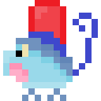

7
Capítulo I: As Cordilheiras de Tolgar
“Eu vou mesmo enfrentar essas cordilheiras enormes? Onde é que eu estou com a cabeça?” – Meu coração parecia uma bateria de tão alto que batia. Eu poderia me chamar de britadeira, de tanto que tremia perante aquela escolha. Talvez eu fosse meio egoísta de estar pensando apenas em minha integridade física, e não no bem-estar do Ancião. “Talvez ele não precise tanto assim do remédio.” Por quê em momentos de dificuldades o ser-humano cria tantas desculpas? “Eu posso simplesmente abrir o menu e Abandonar a quest... Espera. Pare já com isso! Você está em um MMORPG, você não corre perigo real, vê se cria vergonha nessa cara e vá logo ajudar o tal Ancião!” – Era aquilo que a falsa coragem fazia eu pensar. Mesmo em um jogo, eu estava apavorado. Meu personagem realmente estava tremendo. Aliás, meu joystick estava tremendo. As papilas dilatadas dos meus olhos não me auxiliavam em enxergar a situação como um todo. Eu precisava respondê-lo, eu precisava responder o cara com chapéu engraçado, que em algum lugar eu descobrira que seu nome era Alfre. Ele de fato era simpático, tinha uma maneira dócil de se comunicar, apesar das palavras. Meus lábios davam espaços para a cavidade bucal, que davam espaços para minhas cordas vocais expelirem minha falsa coragem em sonoras afirmativas para o tal senhor:
– Eu vou com o Tolgar!
– Belíssima escolha, meu favorito! – Manifestou Alfre, que lhe puxava pela mão e a aparentemente tinha intenção de lhe levar para algum local “contra sua vontade”. Você escolheu ajudar o senhor. Você não sabe as condições do próprio. Você não sabe se ele tem uma doença terminal, ou apenas uma rinite crônica. Fato é que você se comprometeu, e o mínimo que você tem que ter é honestidade para com suas palavras. A britadeira ambulante já havia cessado, entretanto ainda era notável o seu desconforto com o momentum. Pera, porquê eu estou falando na terceira pessoa? Eu sou você... Enfim Enfim
* MMORPG - Massive Multiplayer Online Role Playing Game / *joystick - Controle de vídeogame.
Enfim. Fui logo sendo arrastado para um lugar que eu não conhecia, assim como todos os lugares em Yorcron, pois eu era um novato ali. As planícies eram muito bonitas, muito vastas, o verde daquela flora campal era de engolir meus olhos de tão imenso que eram. Talvez campo e planície sejam coisas diferentes, porém acredito não ter nenhum professor de geografia lendo, então podemos prosseguir. Por mais que as maiorias das criaturas pareciam ser tímidas, sem contar claro as singulares que acompanhavam seus respectivos donos, podia se ver ao longe algumas mais acanhadas, essas parecendo que já habitavam aquele lugar antes mesmo dos jogadores entrarem. Não sabia o nome delas, mas com toda certeza fascinavam pela sua originalidade, tamanho e cores. Tudo que tocava meu campo de visão era muito vívido e brilhante, sem se tornar chocante. Talvez chocante conceitualmente falando, mas sem sombra de dúvida traziam paz e harmonia à minha singela alma virtual. Eu estava gostando de ficar ali. Bastante diga-se de passagem. Provavelmente se Alfre falou alguma coisa para mim, passou batido, pois eu estava muito compenetrado no caminho, e num tipo de criaturinha estranha, não tão grande, talvez batesse no meu joelho, não consigo perceber ao certo por estarem ao longe, mas o mais peculiar com certeza da mesma é ter um tipo de capacete vermelho em seu topo, e perninhas frágeis. Esse último detalhe ofuscado pelo capacete... “Porquê raios aquilo tem um capacete vermelho? O que aquilo faz?”
– Aqueles são os Wirgles! – “Isso dele ler minha mente está me irritando...” Intrigado, talvez bravo, porém atento ao que Alfre estaria para me dizer. – São criaturas azuladas, com rabinhos espiralados... Eles são as criaturas mais fracas que temos no mundo de Your Creature. Eu até falaria para você derrotar alguns deles e subir de nível, mas não temos muito tempo para isso...

8